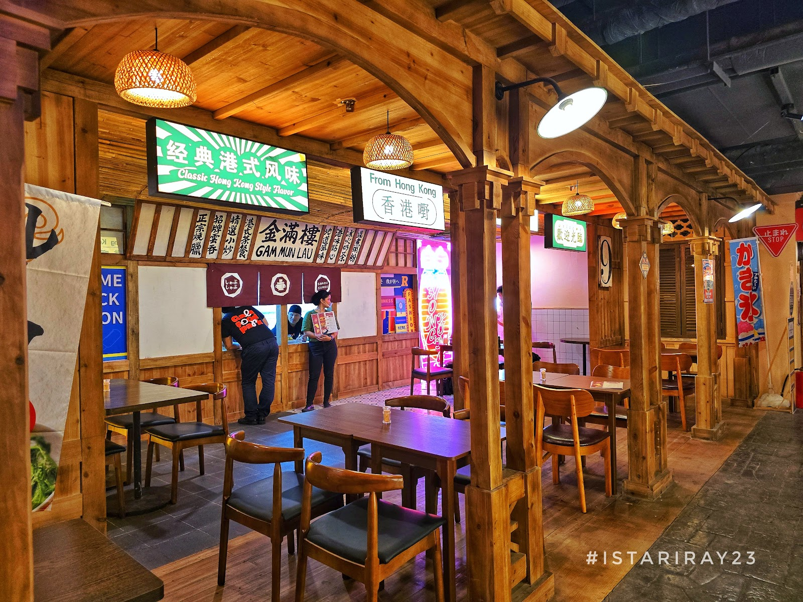

Gala Food Park isn't just an open-air venue—it's an immersive nocturnal escape inspired directly by the glowing street alleys of Tokyo. When night falls over Pasay City, this market lights up with vibrant neon signage, lanterns, and endless steam rising from live cooking stalls.
What makes Gala Food Park worth visiting during late hours is its blend of intense energy and distinct street culinary choices. Whether you need heavy savory comfort food like freshly grilled yakitori and piping hot gyudon bowls after a grueling coding sprint, or a quiet spot to unwind with matcha ice cream and cold beverages, this park strikes the ideal balance between a lively hangout and an urban sanctuary.
◆
| Address | Pasay City, Metro Manila |
|---|---|
| Opening Hours | 4:00 PM – 2:00 AM Daily |
| Price Range | ₱150 – ₱400 per person |
| Best Time to Visit | 10:00 PM onwards (less crowd, peak ambient night atmosphere) |